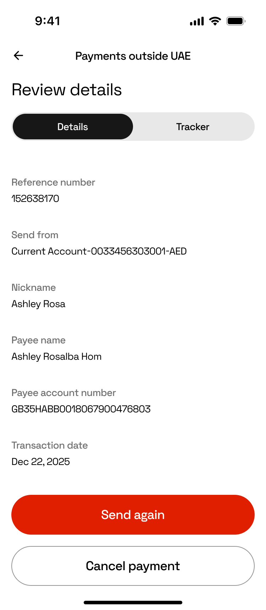
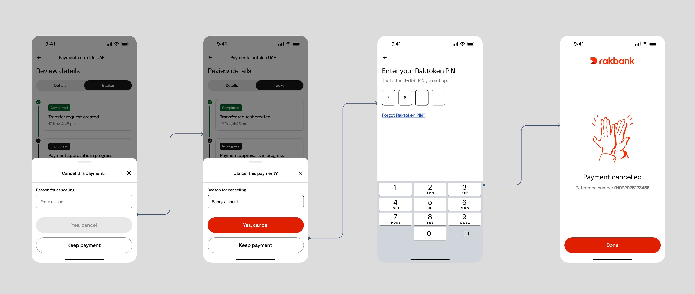

Где мои деньги?
Каждый банк в мире был обязан перейти на новый стандарт сообщений SWIFT — миграцию MT→MX. Для большинства это была невидимая техническая работа. Но новые сообщения несли подробные данные о статусе, и мы использовали их, чтобы дать клиентам живую пошаговую картину того, где находятся их деньги.
Обязательная миграция, превращённая в функцию, которую видит клиент


01 · Проблема
Международные переводы были чёрным ящиком
Клиенты звонили не потому, что что-то пошло не так. Они звонили потому, что не могли понять, пошло ли что-то не так.
Как только клиент нажимал «отправить», его деньги исчезали в сети SWIFT на часы или дни, и единственным ответом приложения было одно слово: в обработке. «Где мой перевод?» — это была регулярная и измеримая доля обращений в поддержку.
Две вещи сошлись, чтобы дать нам это исправить:
- Миграция SWIFT MT→MX. Отраслевой переход на ISO 20022 означал, что платёжные сообщения теперь несут насыщенные структурированные данные о статусе от начала до конца. То, что было требованием комплаенса для банка, тихо стало сырьём для реального опыта отслеживания.
- Обновление дизайн-системы. Старые экраны транзакций стояли на устаревшей DLS, которая не поддерживала нужные нам паттерны. Пересборка дала право переосмыслить опыт, а не латать его.
Возможность: превратить обязательную бэкенд-инфраструктуру в клиентскую функцию доверия.
Глава 1
Ключевое дизайн-решение
Один экран пытался ответить на два разных вопроса. Мы их разделили.
Детали и Трекер, на двух вкладках
Старый экран транзакции пытался ответить на два вопроса на одной поверхности: что это за транзакция? и где она прямо сейчас? Теперь у каждого экрана деталей транзакции две вкладки:
Это повторяет ментальную модель, которой люди уже доверяют по доставке посылок. Никого не нужно учить читать трекер отправления — поэтому мы не заставляли их учить что-то новое ради собственных денег.
Вкладки «Детали» и «Трекер» рядом на одной и той же транзакции.
Глава 2
Картирование всего пространства состояний
Сложная часть трекера — не счастливый путь. Это всё остальное.
Каждое состояние, в котором может быть перевод
Прежде чем проектировать экраны, я каталогизировал каждое состояние, в котором может быть SWIFT-перевод, включая ветки, которые банки обычно прячут. Этот каталог стал единым референсным фреймом в Figma — источником истины для дизайна, разработки и QA. У каждого статуса есть имя, описание, бейдж и определённый следующий шаг.
Перевод начат
Запрос принят, путь начинается.
Проверяем ваш перевод
Идут скрининг и валидация.
Перевод одобрен / Перевод отклонён
Первая ветка: разрешён к продолжению или остановлен здесь.
Отправляем ваши деньги / Деньги не отправлены
Средства покидают счёт — или сбой до того, как это произойдёт.
Деньги отправлены в банк получателя
Переданы через сеть SWIFT.
Наличные готовы к получению → Наличные получены
У клиента есть действие, а затем — подтверждение, что оно выполнено.
Перевод завершён
Конечное состояние счастливого пути.
Перевод не завершён → Возвращаем ваши деньги → Деньги возвращены
Путь возврата, остающийся активным и подотчётным до конца.
Отменяем ваш перевод → Перевод отменён
Осознанная остановка, подтверждённая чисто.
Мы не смогли начать ваш перевод
Самый ранний сбой: он так и не вышел за ворота.
Когда перевод сбоит уже после того, как деньги ушли со счёта, самый страшный момент — это разрыв между «Перевод не завершён» и возвращением денег. Поэтому трекер не останавливается на сбое: он показывает Возвращаем ваши деньги как активный шаг в процессе, а затем Деньги возвращены с подтверждением. Система остаётся подотчётной, даже когда она сбоит.
Полный референсный фрейм «Все статусы отслеживания» — высокий кроп.
Глава 3
Текст как материал дизайна
Названия статусов были спроектированы, а не оставлены по умолчанию.
Что мы написали и почему
- «Обработка» → «Проверяем ваш перевод». Говорит, что на самом деле происходит, голосом банка.
- «В процессе» → «Наличные готовы к получению». У пользователя есть действие. Общие ярлыки это скрывают.
- «Ошибка» → «Деньги не отправлены». Отвечает на настоящий вопрос клиента: ушли ли деньги?
- «Возврат инициирован» → «Возвращаем ваши деньги». Активный залог, ответственность. Банк делает что-то для вас.
Глава 4
Допрос бизнес-логики
Одно уточнение с разработкой перекроило целую ветку дизайна.
Отмена возможна только до списания
На полпути один факт от разработки переписал ветку дизайна: отмена возможна только до того, как произошло списание. Это единственное ограничение:
- Устранило целый класс состояний, которые мы проектировали: отмена-после-списания, частичные возвраты.
- Переписало текст отмены: язык возврата не нужен — только чёткое подтверждение, что со счёта так и не списали.
- Упростило флоу до одного чистого пути.
Подтвердить отмену
Выбрать причину
Аутентификация по PIN
«Платёж отменён»
Решения по тексту и флоу — производные от бизнес-логики, и самое дешёвое время зафиксировать эту логику — до того, как экраны размножатся. Я взял в привычку собирать открытые вопросы как сгруппированные и помеченные комментарии в Figma, направленные к их владельцам решений, чтобы ничто не оставалось неоднозначным по случайности.

Глава 5
Итог и что дальше
В продакшене и подотчётно даже при сбое
- Выпущено в продакшен как часть опыта международных платежей RAKBANK.
- Клиенты теперь видят живой статус по шагам для SWIFT-переводов, включая сбои и возвраты, вместо единственного ярлыка «в обработке».
- Плейсхолдер — добавить при наличии: направленное изменение объёма обращений «где мой перевод» в поддержку после запуска.
Что бы я сделал дальше
- Проверить понимание более редких состояний. «Возврат в процессе» точен, но не протестирован на реальных пользователях.
- Активно доставлять обновления статуса через уведомления, чтобы трекер отвечал на вопрос до того, как его зададут.
- Измерять вовлечённость во вкладку «Трекер» относительно частоты обращений в поддержку, чтобы количественно оценить эффект доверия.
Хотите обсудить детали?
С радостью пройдусь по решениям, пространству состояний и тому, что не вошло в финал.
Связаться